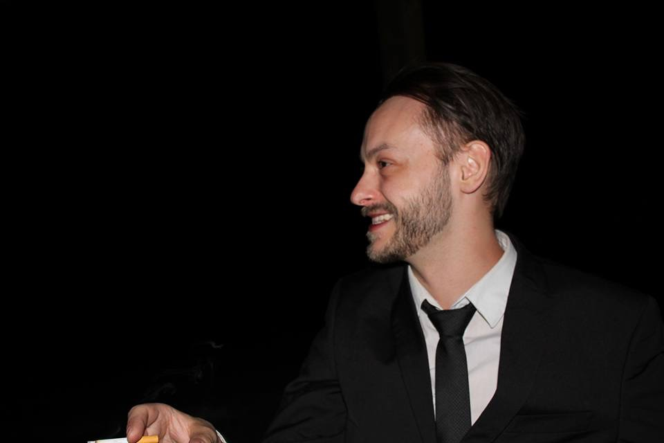

About Wesley Hopkins
I am a Digital Visibility Architect operating at the intersection of classical rhetoric and modern search science. With a Master of Arts in Rhetoric and Composition from the University of North Alabama, I bridge the gap between human intent and machine interpretation.
Currently, as a Project Manager at Reputation Defense Network, I lead high-stakes visibility and reputation campaigns, specializing in the strategic architecture of content that resonates with both human audiences and search algorithms.
The GEO Edge
Visibility is no longer just about keywords; it’s about authority. My background in technical proposal writing—including rigorous work within NASA’s L'SPACE program—trained me to synthesize complex data into clear, authoritative narratives.
In the world of Generative Engine Optimization (GEO), LLMs prioritize sources that exhibit high technical accuracy and structural clarity. I use my experience in proposal architecture to ensure your brand’s "story" is formatted and phrased in a way that AI models recognize, trust, and cite.
Professional Background
- Digital Visibility Architect: Leading reputation and visibility campaigns since 2023.
- Technical & Proposal Editor: Leveraging experience from NASA-level technical requirements to create structured, "machine-readable" authority.
- Research Scholar: Adams Norbin Research Scholar (2020-2021) focused on how language influences perception—a skill now applied to how AI "perceives" and ranks brand data.